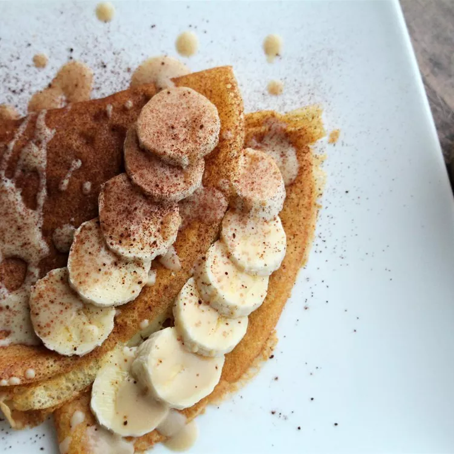

Description
Using this simple "crepe cake" technique, you can turn any of your favorite cake fillings into visually stunning, multi-layered masterpieces. By the way, I say this is simple, not fast, as it does take some time to make and stack all those crepes, but once you get rolling, it goes pretty quickly. Use the ingredient amounts only as a guide, as crepe sizes and filling amounts will vary. Dust with powdered sugar and garnish with fresh strawberries.
Ingredients
For the Crepes:
- 5 large eggs
- 2 1/2 cups all-purpose flour
- 2 tablespoons white sugar
- 1/2 teaspoon vegetable oil
- 3 1/4 cups whole milk
- 1/2 teaspoon vanilla extract
- 4 tablespoons butter, or as needed
For the Fruit Mixture:
- 1 (10 ounce) jar strawberry jam
- 2 tablespoons water
For the Cream Filling:
- 3/4 cup mascarpone cheese
- 1 1/2 cups heavy cream
- 3 tablespoons white sugar
- 1/2 teaspoon vanilla extract
Steps
- Pour eggs, flour, sugar, salt, oil, milk, and vanilla extract into a blender. Blend, starting on low speed and finishing on high, until combined. Refrigerate batter for at least 30 minutes.
- Scoop strawberry jam into a saucepan. Rinse out jar with water and pour into the saucepan. Bring to a simmer over medium heat and stir. Simmer for 1 minute, remove from heat, and stir. Let cool to room temperature.
- Brush some butter over a nonstick skillet over medium heat. Pour in 1/4 cup batter; tilt pan to coat evenly. Cook until crepes bubble and brown, about 1 1/2 minutes per side. Transfer to a baking sheet. Repeat with remaining batter, buttering the pan between crepes. Let cool completely before stacking, at least 15 minutes.
- Combine mascarpone cheese, cream, sugar, and vanilla extract in a bowl. Whisk together until stiff peaks form.
- Lay a crepe onto a large plate. Spoon on 2 or 3 tablespoons of the cream mixture, spreading it almost to the edge. Swirl in some strawberry jam. Transfer finished crepe onto a flat serving plate. Repeat with remaining crepes, cream, and jam. Center each crepe over the previous one in a stack. Gently press on a final plain crepe to finish.
- Refrigerate until completely chilled before cutting and serving.
Home page